Bienvenido a Ciudad Juárez
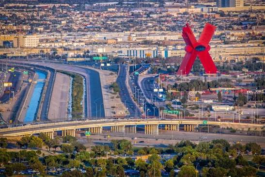
Ciudad Juárez es una ciudad del estado de Chihuahua, en el norte de México. Está justo en la frontera con Estados Unidos, al otro lado del río Bravo frente a la ciudad de El Paso, Texas. Es una de las ciudades más grandes del país y un lugar de mucho trabajo, comercio y cultura fronteriza.
Aquí conviven tradiciones mexicanas con la influencia de la vida en la frontera. Su gente es trabajadora y amable, y su comida, sus museos y sus monumentos la hacen un lugar interesante para visitar.
Sobre este sitio
Este sitio fue creado para dar a conocer lo más importante de Ciudad Juárez. En el botón Información encontrarás lugares turísticos, comida, restaurantes y cultura. En el botón Formulario puedes contarnos qué piensas visitar y qué opinas de la ciudad.
Un poco de historia
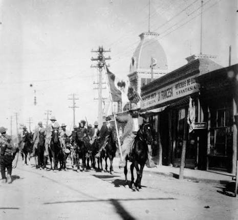
Los primeros pobladores de la zona fueron grupos indígenas. En 1659, los frailes franciscanos fundaron aquí la Misión de Nuestra Señora de Guadalupe, y alrededor de ella nació el pueblo, que se llamó Paso del Norte por ser un paso natural sobre el río Bravo.
En 1848, después de la guerra entre México y Estados Unidos, el río Bravo se convirtió en la frontera y la ciudad quedó dividida de El Paso, Texas.
Durante la Revolución Mexicana, esta ciudad fue muy importante. En 1865 el presidente Benito Juárez estuvo aquí y, en 1888, el pueblo cambió su nombre a Ciudad Juárez en su honor. En 1911 aquí se firmaron los Tratados de Ciudad Juárez, que terminaron con el gobierno de Porfirio Díaz.
Más adelante, con las fábricas maquiladoras, la ciudad creció muchísimo y se convirtió en un centro industrial y comercial muy importante.
Lugares turísticos
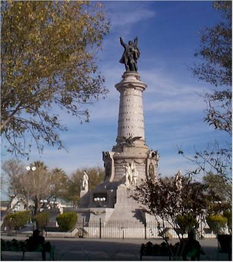
Monumento a Benito Juárez
Un gran monumento dedicado al presidente que le dio nombre a la ciudad. Es un lugar muy conocido para tomar fotos y pasear.
Precio: Gratis
Ubicación: Zona del Chamizal, Ciudad Juárez
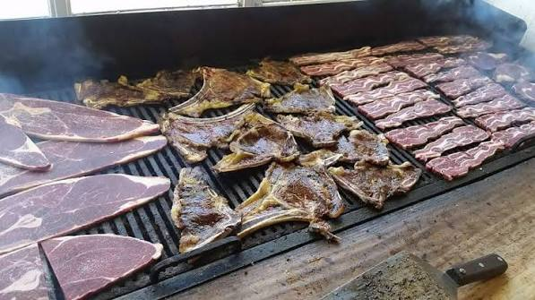
Misión de Guadalupe y Catedral
Fundada en 1659, es uno de los edificios más antiguos de la ciudad. Se encuentra en el centro histórico, junto a la Catedral.
Precio: Entrada libre
Ubicación: Centro Histórico, Av. 16 de Septiembre
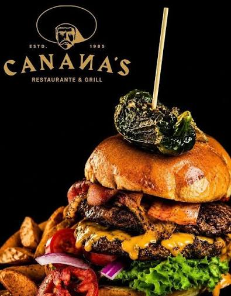
Parque Público Federal El Chamizal
Un parque enorme con áreas verdes, juegos, caminos para correr y espacios para eventos y conciertos.
Precio: Gratis (algunos eventos tienen costo)
Ubicación: Zona del Chamizal, Ciudad Juárez
Gastronomía
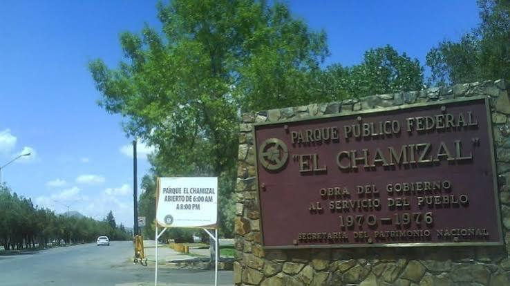
Burritos de machaca y de guisado
Tortilla de harina grande rellena de carne seca deshebrada (machaca), frijoles o guisados. Es un desayuno típico del norte.
Precio: Desde $25 pesos aprox. cada uno
Dónde: Puestos y loncherías de toda la ciudad
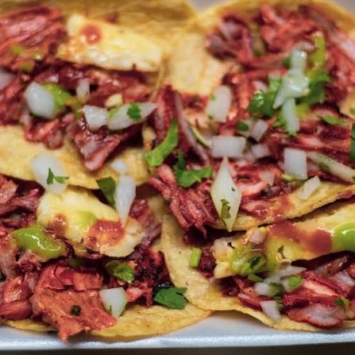
Carne asada y cortes
La carne asada es un orgullo del norte del país. Se come con tortillas, frijoles, cebollitas y salsas.
Precio: Desde $150 pesos aprox. por persona
Dónde: Asaderos y restaurantes de la ciudad
Restaurantes
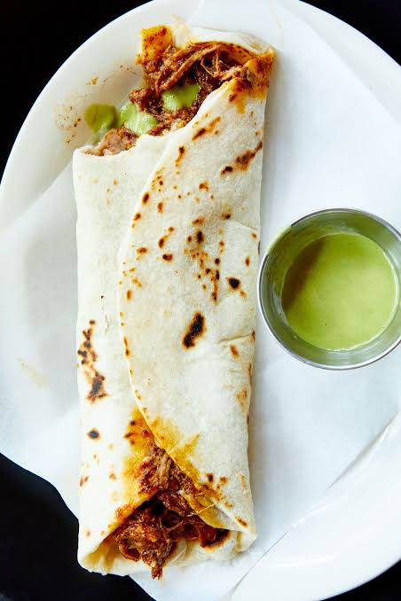
Restaurantes de comida norteña
En la zona de la Av. Hermanos Escobar y la Av. Tecnológico hay muchos restaurantes de comida mexicana y norteña para toda la familia.
Precio: De $120 a $350 pesos por persona aprox.
Ubicación: Av. Hermanos Escobar / Av. Tecnológico
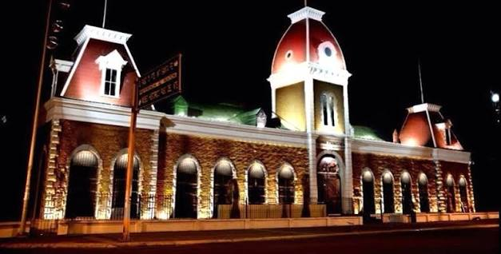
Taquerías
Para una cena rápida y rica, las taquerías abundan en toda la ciudad. Prueba tacos de pastor, asada y gringas.
Precio: Desde $15 pesos aprox. por taco
Ubicación: Varias zonas de la ciudad
Cultura
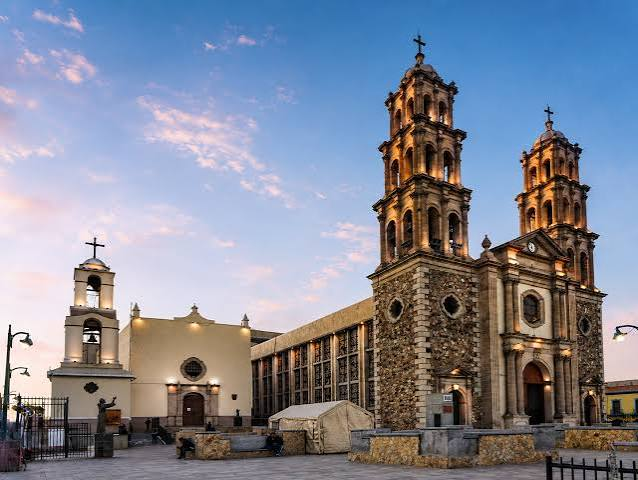
Museo de la Revolución en la Frontera (MUREF)
Está en el edificio de la antigua aduana y cuenta cómo la Revolución Mexicana se vivió en la frontera.
Precio: Aprox. $30 pesos (consultar)
Ubicación: Av. 16 de Septiembre, Centro
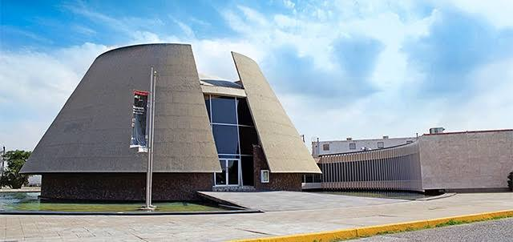
Museo de Arte e Historia
Exposiciones de pintura, escultura e historia local. Una buena opción para pasar la tarde y conocer a los artistas de la región.
Precio: Aprox. $20 a $40 pesos (consultar)
Ubicación: Zona Centro, Ciudad Juárez
Nota: los horarios y precios son aproximados y pueden cambiar; conviene confirmarlos antes de visitar.